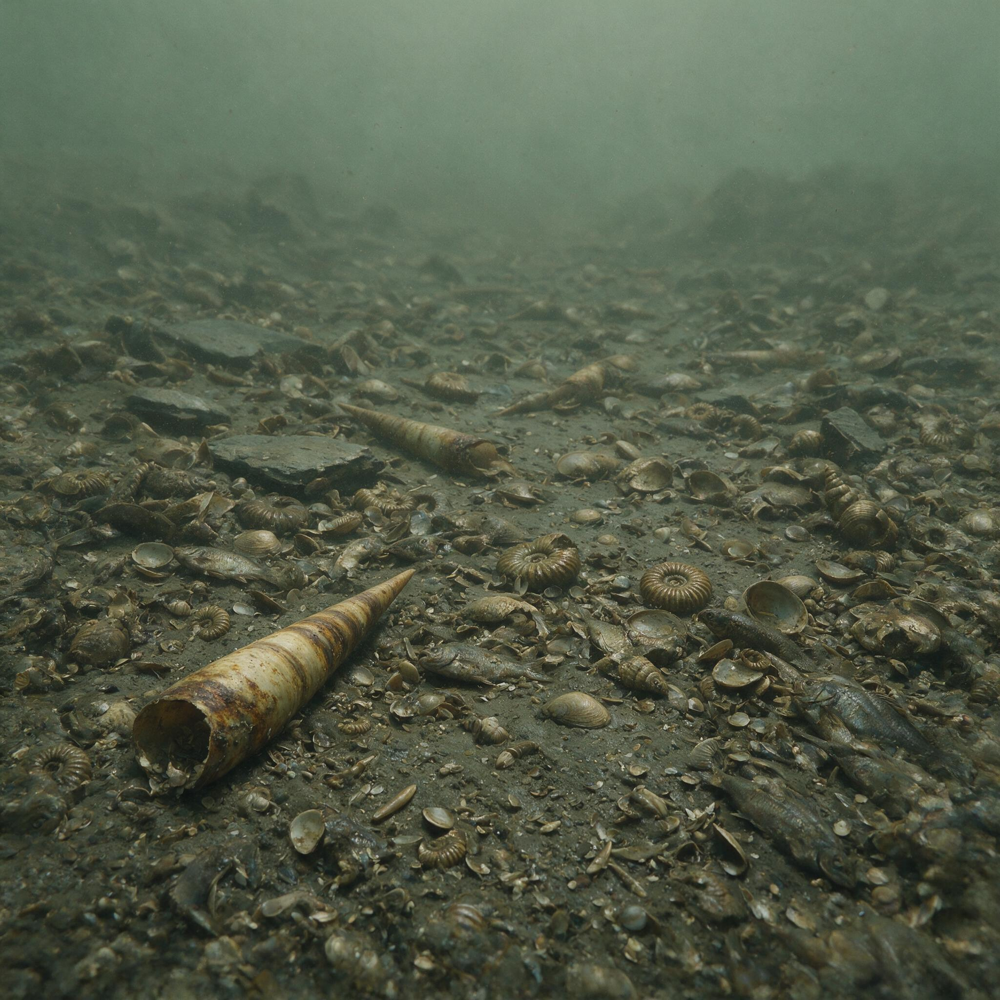

第 13 章
行走的低氧陆地
纵览地球漫长的生命史，二叠纪与三叠纪之交的那条界线，便如同一道深刻的伤痕。把镜头拉远，聚焦于煤山剖面，那层薄如剃刀片、洁净如黑板的黏土，正是划分两个截然不同世界的标志。界线之下，是大型二齿兽的足迹、巨型树蕨的化石与腕足动物的壳；而界线之上，沉积物却近乎寂静，仅偶见小型脊椎动物骨骸的残片。
走进这个“干净层”的，不是胜利者，而是幸存者。它们走进来的时候，面对的不只是被清空的舞台，还有一张被重新定义过的物理规则表。

大气中的氧气浓度，已从石炭纪的百分之三十以上的高峰塌落，跌到现代水平的百分之十五到二十之间，并且在整个三叠纪——整整五千万年——都没有真正恢复。这不是一个短暂的缺氧期，而是一道持续施加压力的无形天花板，悬在每一个需要从空气中提取氧气的陆地脊椎动物头顶。
要理解这道天花板有多低，一个简单的数字比较就能说明问题。现在的你正在读这段文字，如果此刻你所在房间的氧气含量降到百分之十五，你的手指会开始发麻，嘴唇变紫，判断力显著下降。如果降到百分之十二，你会失去意识。
而三叠纪早期的陆地脊椎动物，就在这样一个相当于现代海拔四千米以上的低氧环境里，不仅要呼吸，还要进食、躲避天敌、繁殖后代，并且演化出此后一亿八千万年的全部陆地脊椎动物谱系。这不是一个“生命如何在逆境中坚持”的励志故事，而是一个关于工程妥协的演化史：在氧气不够用的时候，身体的所有设计方案都必须重新评估，原本可以兼得的性能不得不做取舍，而有些看似“退步”的选择，反而在更长的时间尺度上变成了优势。
本章的论断正是从这里切入：哺乳动物在大灭绝之后的崛起，并非一个理所应当的氧气故事，而是一个在持续低氧环境中被迫压缩体型、重构生理极限的适应传奇。
为了看清这个论断所依据的证据，我们需要同时追踪三组不同的动物谱系，看它们在相同的低氧压力下，交出了怎样不同的答卷。第一组是初龙类，也就是恐龙及其祖先所在的谱系。
三叠纪早期的初龙类化石，比如发现于南非和俄罗斯的早三叠世地层中的原鳄类，显示出一种明确的方向：它们保留了相对较大的体型，并且发展出了更高效的呼吸系统。
现代鸟类的祖先——也就是兽脚类恐龙——后来演化出了一种被称为“单向气流肺”的呼吸结构，这种肺在吸气和呼气时都能让空气持续流过气体交换表面，效率远高于哺乳动物的往复式呼吸。这一结构的化石证据直到鸟类出现后才明确，但初龙类骨骼中气囊侵入椎骨的痕迹，暗示它们的呼吸系统很早就开始向高效能方向演化。初龙类用解剖学上的“升级”来应对低氧：它们在身体里安装了一套更强大的气泵，强行从稀薄空气中提取足够的氧气，以支撑更大的体型和日间活动。
第二组是喙头龙类，三叠纪晚期繁盛的一类爬行动物，它们走得是一条完全不同的路。喙头龙类体型大小不一，但普遍具有桶状躯干和粗壮四肢，化石显示它们很可能过着半水栖或伏击型捕食者的生活。它们的肋骨厚重，没有横膈膜的任何结构痕迹，呼吸方式完全依赖肋间肌和体壁运动。
这种呼吸系统在低氧条件下的效率不高，但喙头龙类用另一种方式弥补了缺陷：低代谢率。它们不需要像活跃奔跑的动物那样消耗大量氧气，可以长时间保持静止状态，等待猎物上门。这种策略在短时期内是有效的，喙头龙类在三叠纪广泛分布，但到了三叠纪末期，当环境再次动荡、竞争加剧时，它们几乎全部灭绝。低代谢策略在稳定环境中可以存活，但一旦环境变化加速，它缺乏应对的弹性。
第三组，就是哺乳形类——我们的直系祖先。在这个谱系身上，我们看到的是第三种策略，一种在当时看来几乎是“全面退让”的策略，却在漫长的演化中显露出惊人的后劲。
哺乳形类的化石记录从三叠纪晚期开始出现，此后的整个侏罗纪早期，它们共同的特征只有一个字：小。摩根齿兽，发现于中国云南的早侏罗世地层，头骨长度不到三厘米，整只动物加起来也就一只鼩鼱那么大。三瘤齿兽类稍大一些，但也不过是鼩鼱到大鼠的尺寸。在整个三叠纪和侏罗纪的漫长时间里，哺乳形类没有演化出任何大型物种。
这种持续的小型化不是偶然，而是低氧环境下的物理约束在起作用。这里需要引入一条关键的生理学原理：氧气从体表进入细胞，依赖的是扩散。扩散速率与表面积成正比，与扩散距离的平方成反比。一个小型动物拥有较高的表面积体积比，意味着它的每一个细胞距离体表都更近，氧气不需要穿透多层的组织就可以到达目的地。
当大气氧含量下降时，这个物理约束就会变得极其苛刻——大型动物的内部细胞可能永远处于缺氧状态，无论它怎么用力呼吸。唯一能绕过这个限制的方法，就是缩小体型。早期的哺乳形类没有选择，它们被扩散定律压成了一个狭窄的体型区间，而它们在此后的演化中，学会了在这个区间里做文章。
但仅仅是缩小体型还不够。哺乳形类还发展出了一项关键解剖创新，这项创新最终将它们的呼吸效率提升到了与初龙类完全不同的方向上。那就是横膈膜。横膈膜是一块肌肉，它将胸腔和腹腔分隔开来，收缩时向下拉，扩大胸腔容积，产生负压，将空气吸入肺中。
这种负压呼吸方式的效率，远高于爬行动物依靠肋间肌推拉胸廓的“正压”或“抽吸”式呼吸。在低氧条件下，每一次呼吸能多吸进一点空气，就意味着多获得一点氧分子。横膈膜的出现时间，是哺乳动物演化史上一个至关重要的节点。化石证据来自三瘤齿兽类——它们的腰椎和胸椎交界处，保留着横膈膜肌肉附着点所特有的骨性棘突，这些结构在现代哺乳动物中同样存在，是横膈膜存在的可靠骨骼标记。这些化石表明，在侏罗纪早期，哺乳形类已经拥有了横膈膜，这意味着它们已经装备了一套比同时代爬行动物更高效的呼吸系统。
但这里有一个矛盾。如果哺乳形类拥有更高效的呼吸系统，为什么它们没有像初龙类那样，演化出更大的体型？为什么它们反而在小型化的道路上走得更远？答案在于它们选择的生活方式。
化石证据——包括牙齿微磨痕、眼眶比例、肢骨结构——一致显示，早期的哺乳形类主要是夜行性的食虫动物，很多种类很可能有穴居习性。
在现代鼩鼱和早期哺乳形类之间，存在着惊人的相似性：它们的牙齿有尖锐的齿尖，适合刺穿昆虫的几丁质外骨骼；它们的眼眶比例偏大，暗示夜行性视觉；它们的四肢短小，但结构灵活，适合在狭窄的空间中穿行。这些特征指向一个共同的生存策略：在夜间和地下活动，避开白天的高温、低湿和捕食压力，同时利用落叶层和土壤中相对稳定的微环境。
夜行性加穴居，这个策略在低氧时代有隐蔽的优势。夜间温度低，空气密度大，单位体积内含氧量实际上比白天略高。土壤中的空气虽然二氧化碳浓度偏高，但温度和湿度稳定，氧气的实际可用性并不比地面低多少。
更重要的是，这种生活方式避免了与初龙类正面对抗——白天的开阔地带，已经被那些拥有更强大呼吸系统的爬行动物占据，而哺乳形类退入了黑夜和地下，在那里，小型化不再是一个劣势，反而变成了优势。一个体型只有鼩鼱大小的动物，可以钻进树根缝隙、石块底下、枯枝落叶层中，在那里找到昆虫、蠕虫、蜘蛛，躲过大多数捕食者。这个群像并置的画面至此已经清晰。
三叠纪至侏罗纪早期的陆地上，低氧的大气如同一把锋利的刀，将不同谱系的脊椎动物切割成不同的适应形态。初龙类选择了升级呼吸系统，用结构上的高效来对抗环境中的稀薄，这是正面应战的策略。喙头龙类选择了降低代谢需求，用“慢生活”来降低对氧气的依赖，这是保守防御的策略。而哺乳形类选择了一条迂回的道路：它们缩小体型，缩短生命周期，演化出横膈膜驱动的负压呼吸，进入夜间和地下的稳定微环境，避开竞争最强、氧气压力最大的时段和空间。它们没有正面应战，而是绕过了战场。
但这三种策略的长远后果截然不同。初龙类的策略在当时看来是成功的——它们中的一部分后来演化成了恐龙，称霸中生代陆地生态系统长达一亿多年。但它们的呼吸系统有一个隐性的限制：单向气流肺虽然高效，却需要较大的体型来维持。体型一旦缩小，这套系统的边际效益就会急剧下降。因此初龙类很难演化出小型化、高代谢的物种，它们在体型谱系的下端，始终被哺乳形类牢牢占据。
喙头龙类的策略则更脆弱——低代谢意味着低恢复力，一旦环境发生剧烈波动，种群无法快速恢复。三叠纪末期的又一次灭绝事件，几乎清除了这个谱系的所有成员。
而哺乳形类的小型化加横膈膜策略，在低氧时代是被迫的妥协，但它在演化中积累了一个当时完全看不见的资产：高代谢的潜力。横膈膜允许哺乳形类在同等体型下拥有比爬行动物更高的代谢率，这意味着它们可以维持更稳定的体温，更快的反应速度，更持续的活动能力。只是在低氧条件下，这个潜力无法充分释放——氧气不够，高代谢就是空谈。哺乳形类像是一台被限制在低转速的引擎，它的设计能力远高于它的实际输出，而这个设计能力，要在氧气浓度回升之后，才能被真正“解锁”。
这个判断需要证据支撑。现代实验生物学提供了关键的类比证据。对鼩鼱——现存体型最小的哺乳动物之一，体重仅两到三克——的研究显示，这些小型哺乳动物的代谢率极高，单位体重的耗氧量是同等体重爬行动物的五到十倍。
它们需要持续进食才能维持体温，一旦断食几小时就会因低血糖而死亡。但它们在低氧环境中的耐受能力表现出显著的可塑性。将鼩鼱置于含氧量百分之十五的环境中，它们的呼吸频率会立即增加，但不会出现明显的活动障碍；而同样体型的蜥蜴在同等条件下，活动能力显著下降，体温调节也出现紊乱。这意味着，哺乳动物的小型化高代谢体系，天然具备比爬行动物更强的低氧耐受性，而这个优势，在数千万年前的三叠纪至侏罗纪低氧环境中，同样会发挥作用。
但实验数据也同时揭示了一个尖锐的矛盾：高代谢系统的能耗极大，一旦氧气供应降至某个临界点以下，系统就会崩溃。鼩鼱在含氧量低于百分之十的环境中，存活时间不超过几小时；而蜥蜴可以进入深度休眠，将代谢率降低到正常水平的十分之一，等待氧气恢复。在极端低氧条件下，低代谢策略反而更安全。这个矛盾正是早期哺乳形类所面临的困境：它们的高代谢潜力是优势，但在低氧时代，这个优势不能完全发挥，甚至可能成为负担。
它们必须小心翼翼地控制代谢率，在活跃捕食时稍微提高，在休息时迅速降低，始终让自己的能量消耗与氧气供给之间保持脆弱的平衡。这是一种“限速运行”的生存状态，而它持续的时间之长，超乎想象。
从三叠纪早期——大约两亿五千万年前——开始，大气氧含量就徘徊在低水平区间，直到侏罗纪中期才开始缓慢回升，真正突破现代水平要到白垩纪。这意味着哺乳形类在低氧阴影下，生活了超过一亿年。
一亿年，足够让一个身体设计方案被反复打磨，每一个细节都针对低氧条件下的效率最大化进行优化。哺乳动物的心肺系统、血液循环系统、血红蛋白的结构、代谢率的调控机制，所有这些特征，都在这段漫长的时间里，被低氧这道选择过滤器反复筛选，直到它们变成一套高度精密的低氧适应系统。现在，我们需要回应一个不能回避的反方观点。
有一种有力的解释认为，氧气仅仅是生命演化的中性舞台，真正主宰演化方向的是温度、地质构造和营养盐的波动，大氧化只是缓慢的渐变，没有毁灭性的后果，复杂生命是多次偶然内共生事件独立累积的结果。这个观点有它的合理成分——氧气的确不是唯一的环境变量，温度变化、板块构造、海平面升降、营养盐循环，这些因素都在生命史上扮演了重要角色。
但将氧气视为“中性舞台”，忽视了一个关键事实：氧气直接参与生化反应，是细胞呼吸的终端电子受体，它的浓度变化不是宏观背景，而是直接写进每一个细胞的能量方程里的变量。当大气氧含量从百分之三十降到百分之十五时，对于一只需要呼吸的动物来说，这不是“环境背景变了”，而是“能量货币贬值了一半”。这是物理化学层面的硬约束，不是温度或营养盐可以替代的。
至于“大氧化只是缓慢渐变”的说法，条带状铁建造和硫同位素异常的记录早已给出了反证：大氧化事件是一次全球性的氧化还原状态跃迁，它的前后之间存在明确的非连续性。
而本章所论述的三叠纪至侏罗纪低氧期，同样不是缓慢渐变——石炭纪的高氧到二叠纪末的低氧，间隔不过几千万年，对于一个需要呼吸的动物谱系而言，这是足以改变演化路径的压力变化。
生命当然有其偶然性，内共生事件的确是独立发生的，但一旦线粒体出现，氧气就变成了一个不可回避的选择压力，它不再是一个中性舞台，而是要筛选出那些能够最有效利用稀薄氧气的身体设计方案。低氧这道筛选器，在三叠纪至侏罗纪的陆地上，选出了哺乳形类的小型化高代谢路径。这个路径在当时看来不是最优解，初龙类似乎才是赢家。
但演化没有“在当时看来”这回事。演化的进程是盲目的，它只对当下的环境压力做出反应，而不管这个反应在将来会带来什么。哺乳形类被低氧强行压缩进一个狭窄的体型区间，被迫发展出横膈膜和负压呼吸，被迫在夜间和地下磨炼出一套高代谢高能耗的生理系统。在当时，它们是在苦苦挣扎。
但在白垩纪氧气回升之后，这套系统展现出了惊人的竞争力——恒温、高代谢、持续活动能力，这些特征让哺乳动物在恐龙灭绝之后，迅速填补了生态位空缺，并最终演化出包括人类在内的全部现代哺乳动物谱系。
但这一切，在当时的三叠纪夜晚，还完全看不到迹象。一只摩根齿兽在蕨类丛中穿梭，寻找甲虫的幼虫。它的身体只有鼩鼱那么大，心跳每分钟超过三百次，每一次呼吸都依赖横膈膜的收缩，将稀薄的空气吸进它小小的肺。它的体温比周围环境高出几度，这需要它每天吃掉相当于自己体重一半的食物，才能维持热量的平衡。它不能停下来。
低氧的大气像一张无形的网，始终悬在它头顶，要求它必须永远保持最高效的气体交换。它必须足够小，小到氧气可以扩散到每一个细胞；又必须足够快，快到可以在氧气耗尽之前捕获足够的食物。这是一场在低氧陆地上进行的、持续了一亿年的生理极限训练。而这场训练的结果，最终写在了所有哺乳动物的身体里。你的横膈膜，就是那片低氧时代留下的遗产；
你的高代谢率，就是那台曾经被限速运转的引擎，在氧气回升之后被解锁的产物。你每一次深呼吸，都是对那个长达一亿年的低氧年代的一次迟来的回应。那个年代早已过去，但它们留下来的设计图纸，至今仍然决定着你的每一次呼吸、每一次心跳、每一个需要氧气的细胞反应。低氧的时代塑造了哺乳动物，而哺乳动物带着这个时代赋予的生理特征，走进了富氧的未来。